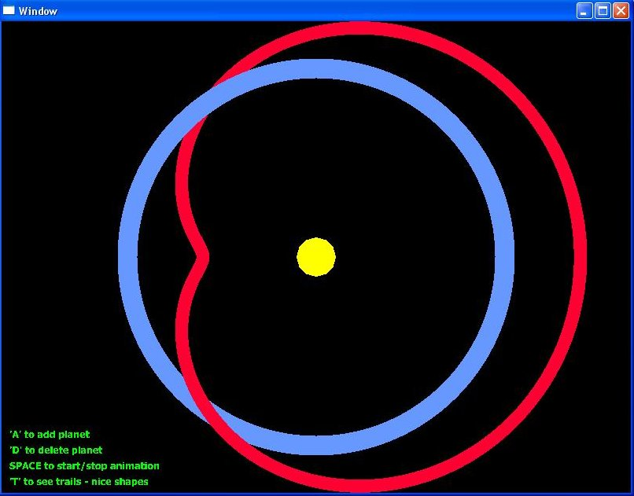

Running the project
Build and run the project. Initially you will only see the sun. You can
interact with the tool using the following commands:
What does the project do?
The project demonstrates a simple hierarchy. The planets revolve around the sun and the
moons around the planet. The speed and distance between objects is randomly chosen.
This program allows more than 8 planets. Isn't that wrong?
Yes, it is a bug and will be fixed soon.
This is boring. Show me something interesting.
When the rotation speed of the planet and the moon are aligned, the path tracted out by the moon
is a shape called the cardiod. This can be seen by enabling trails.
